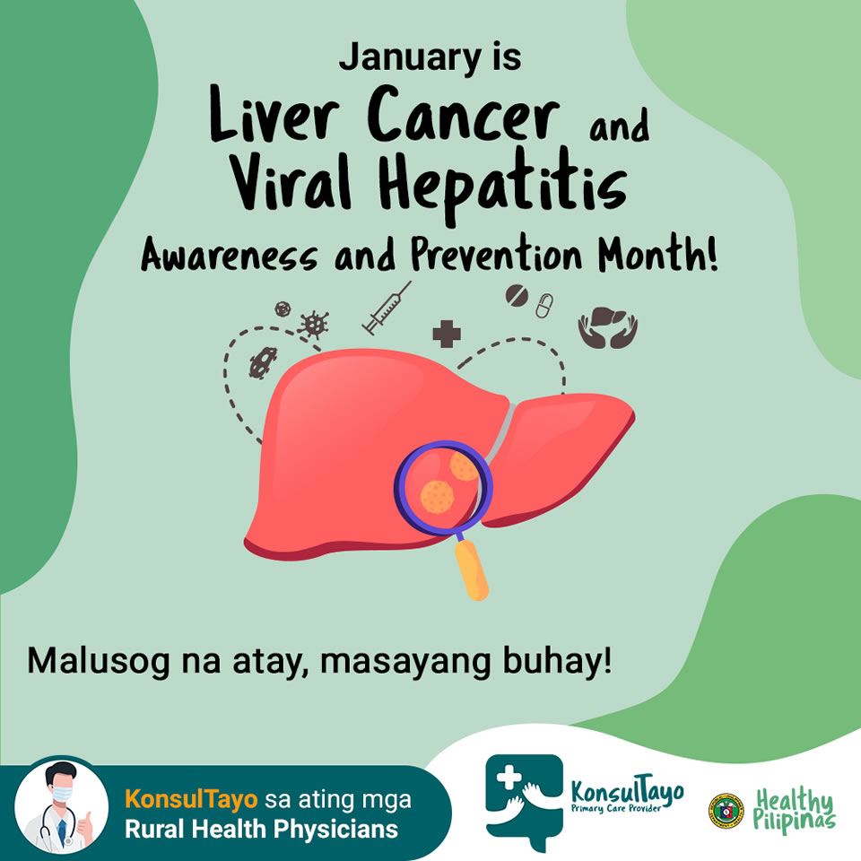

January 4, 2021Liver Cancer and Viral Hepatitis
Take care of your liver because every January, we celebrate Liver Cancer and Viral Hepatitis Awareness and Prevention Month! This 2021, with a healthy liver, surely life will be fun!
#HealthyPilipinas